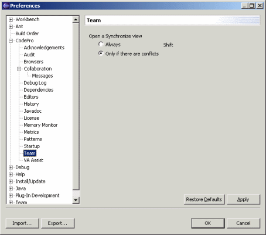

Preferences - Team - ObsoleteNote: This feature is not available under Eclipse 3.0 or above  This page is used to control various CodePro team options. Open a Synchronize viewThis preference determines whether the CVS Working Set Synchronize commands always open a Synchronize view or only open the view if there are conflicts. If you prefer the alternative behavior in a particular case, you can hold down the shift key when invoking the command, as suggested by the label on the unselected option. |